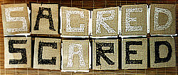

|  |  |  |  |
|
 click here to view larger image |
 |
Sometimes the Difference Between What I'm Scared of and What I Find Sacred is Only a Matter of a Few Letters burlap paper, white & black thread, white & black zippers 100 x 40 cm 1999 collection Chicago Genesis |
|
Birth, death, the opposite sex, a different race, etc. ... I see a yin yang
relationship in much of what we are scared of or what we find sacred. Tip the balances one way and what we don't understand becomes something we want to worship. Tip the balances the other way and our fear of the unknown leads to a completely different set of behaviors. |